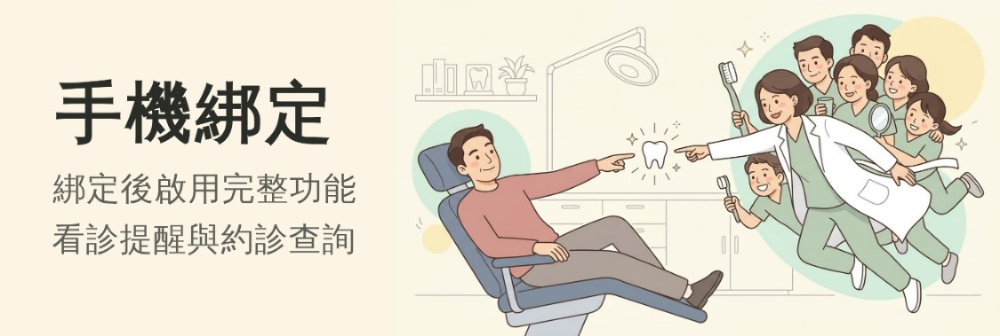
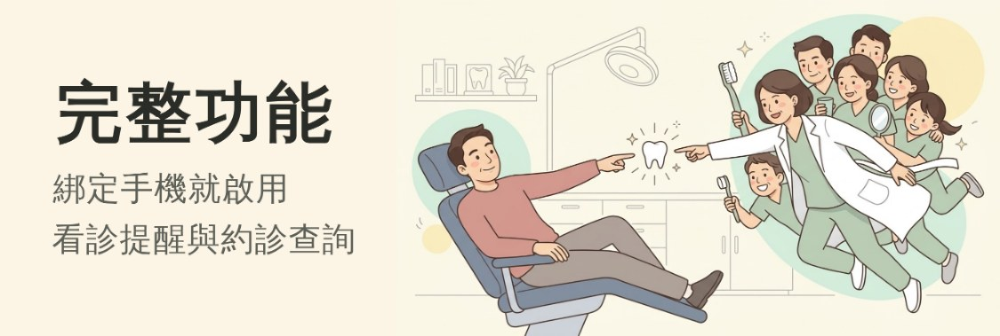
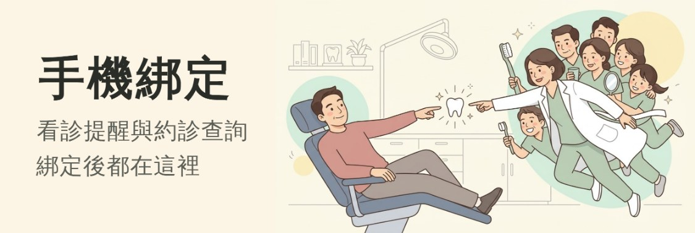
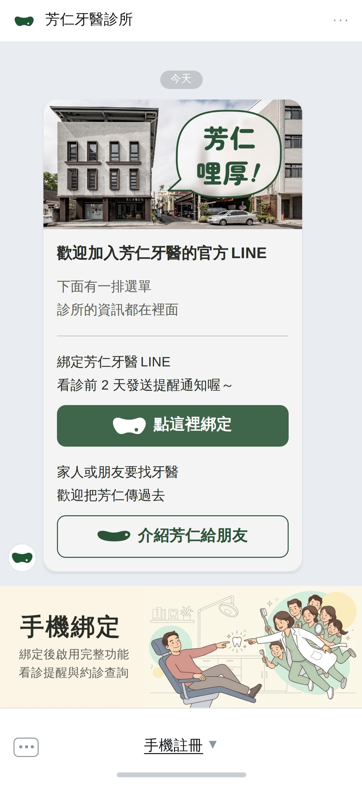

LINE 圖文選單：手機綁定 把綁定完成那張插圖擺進聊天室最底下那條選單 2026-09-09
你抓到的那個 bug 不只是文字的事。
這個帳號的選單本來是 3×2 六格（選單列寫「點我選服務」），加好友就點得到；
而我做的那一張是整條一格 —— 等於把六格全部換掉。
底下先把這件事攤開，再給四格文案。
一、bug 的根：六格被一格換掉了文案只是外層
drafts/channels/README.md 第 6-1 節量過的）：診所資訊 約診查詢 診療項目
醫師介紹 衛教資訊 基本設定
—— 六格，加好友就能點，要綁定的只有「約診查詢」查得到東西、以及收得到看診提醒。
我做的那一張把這六格整條換掉了，所以綁定之前一格都點不到 —— 而其中三格的內容正是這條線自己剛做完的（診所資訊／主題與科別七科／衛教懶人包 12 張）。
⚠⚠ 你要的那句話，前提就是這件事。「啟用完整功能」在說「不完整的那一份現在就能用」—— 整條被橫幅佔滿的話，那個前提是假的。所以文案和選單結構是同一件事，不是兩件。
二、擺法要先定這個，文案才站得住
- 建議：六格裡挪一格給綁定。
後台自己就設得了、今天就能上，六格一格都不會不見，
招呼卡那句話也一個字都不用改（見下一節）。
⚠ 最合理的是「基本設定」那一格（綁定本來就是設定）—— 但那一格底下現在是什麼我們還沒問到，有可能綁定早就在裡面了。
⚠ 代價是綁定的曝光比整條橫幅小 —— 但招呼卡上那顆滿版的「點這裡綁定」還在， 而且它出現的時機正好是加好友那一刻，綁定的主力本來就在那裡。 - 森釉那條：橫幅只給「還沒綁定的人」，綁定完成就換回六格。
綁定曝光最大，六格也沒有永久損失。
⚠ 要廠商做「分眾選單」（LINE 支援，但要他們的系統判斷誰綁了）—— 這本來就是問題清單第 4 項，走這條就從「要不要做」變成「非做不可」。
⚠⚠ 而且要改你自己定稿的招呼卡（見下一節）。 - 橫幅和六格同時擺在一條選單上 —— 後台的預設版型有沒有這種切法要按一次才知道， 自訂的話一樣要廠商送。
二之二、你剛發現的：招呼卡那一句它替上面那三條做了決定
下面有一排選單
診所的資訊都在裡面
—— 那句話是在六格還在的時候寫的，而它送出的時機正好是加好友那一刻， 那時候還沒有人綁定。
所以整條換成橫幅之後，那句話在它送出的當下就是假的 ——
底下沒有一排選單，只有一張叫你去綁定的圖。
上面那張聊天室模擬就是證據：招呼卡寫著「下面有一排選單」，
而它下面那一條是綁定橫幅。
| 擺法 | 「下面有一排選單」 | 要動到你定稿的字嗎 | 要等廠商嗎 |
|---|---|---|---|
| ① 六格挪一格 | 成立 | 不用 | 不用 |
| ② 森釉那條 | 送出當下是假的 | 要改 | 要（分眾選單） |
| ③ 橫幅＋六格 | 成立 | 不用 | 看後台有沒有那種版型 |
⚠ 真的要走 ②，招呼卡那一塊最小的改法有兩個，
兩個都動到你自己寫的字，所以沒有自己改：
甲 綁定後下面會有一排選單／診所的資訊都在裡面 （把它變成綁定的下一步）
乙 那一塊整個拿掉 （招呼卡只講綁定與介紹兩件事）
三、文案四格只差字，版型與圖一個數字都沒動
主標最多 4 個全形字（4 字 699.6 ✓／6 字 1049.4 ✗）、副標最多 9 個。
→ 「啟用完整功能」當不了主標（6 個字，連縮成小一階的 145px 都還超出 132px）， 那個意思只能放進副標。字欄也不能再放寬，990 已經是插圖裁法翻面的地板。
⚠ 「30 秒」四格一個都沒寫 —— 森釉那張寫「30秒 綁定手機」， 但我們沒有量過芳仁的綁定要多久，那條流程是廠商的。要寫得先問到。
版型 小型 2500×843 手機上 375×126 圖欄 227×126 插圖 100% 看得到 一個人頭 13.5px
主標 24.8px 副標 12.3px

Ⓐ 手機綁定／綁定後啟用完整功能／看診提醒與約診查詢 建議
最貼近你講的那句話：動作留在主標，好處放第一行。

Ⓑ 完整功能／綁定手機就啟用／看診提醒與約診查詢
主標從動作換成結果，動作退到第一行。

Ⓒ 手機綁定／立即啟用完整服務／看診提醒與約診查詢
用「服務」不是「功能」、加一個「立即」——最靠近森釉那張的口氣。

Ⓝ 現在這樣（對照）／看診提醒與約診查詢／綁定後都在這裡
「綁定後都在這裡」＝ 把功能講成關在門後面 —— 那一句就是你說的那個 bug。

Ⓐ 在 LINE 裡長什麼樣（整支手機 375×812 ＝ 一支 iPhone 真正的大小）。
四、檔案四格都是候選，還沒有「要上傳的那一張」
挑定之後才會改名成 fangren-richmenu-2500.jpg。
字改在 drafts/channels/richmenu-bind.mjs 的 CASES，改完重跑。
二、尺寸可以變嗎可以，但要看是誰在設
後台自己設LINE Official Account Manager → 圖文選單只有兩種
| 版型 | 尺寸 | 比例 | 手機上 |
|---|---|---|---|
| 大型 | 2500×1686 1200×810／800×540 | 1.483 | 375×253 |
| 小型（現在這種） | 2500×843 1200×405／800×270 | 2.966 | 375×126 |
版型裡的格子可以自己切（幾格、切在哪），但整張圖的比例只有這兩個， 上傳的圖對不上就會被它自己裁。
廠商用系統送Messaging API 的 rich menu可以自訂
→ 我們這張插圖是 1.792，剛好過得了 1.45， 所以「整張圖一個像素都不裁」做得到，但只有廠商那一側做得到（底下 Ⓒ）。
五、還沒定的都要你點頭，沒有自己決定
- 擺法先挑（第二節那三個）。文案是跟著它走的 —— 走建議那條（綁定後換回六格）就可以寫「完整功能」； 真的要整條永久佔著，那句話就不太站得住。
- ⚠ 選單列那行字。現在寫「點我選服務」；
換成橫幅之後森釉那邊寫的是「手機註冊」。
那一行誰在設、改不改得動要問廠商 —— 而且我們寫「綁定」、他們寫「註冊」， 這條線其餘每一則（綁定完成卡…）一律用「綁定」。 - 「基本設定」那一格底下是什麼（第二節退路那條要用到）—— 綁定有可能早就在裡面了。這一題本來就在廠商清單上。
- 綁定要幾秒。森釉寫 30 秒，我們沒有量過，四格都刻意沒寫。
- 這條選單點下去要去哪裡。綁定的網址是廠商系統產的，我們手上還是佔位符。
產生器 node drafts/channels/richmenu-bind.mjs
守門 node drafts/channels/check-richmenu.mjs
推導 drafts/channels/README.md 第三十七節
插圖 drafts/bind-done-v4-src.jpg（＝綁定完成卡那張頭圖的原檔，1376×768）
⚠ 這一頁沒有用到你那張截圖的任何一個像素 —— 聊天室、選單列、手機外框全部自己畫。
這個 repo 是公開的。